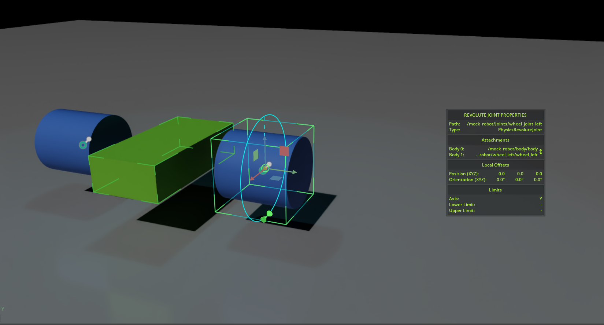
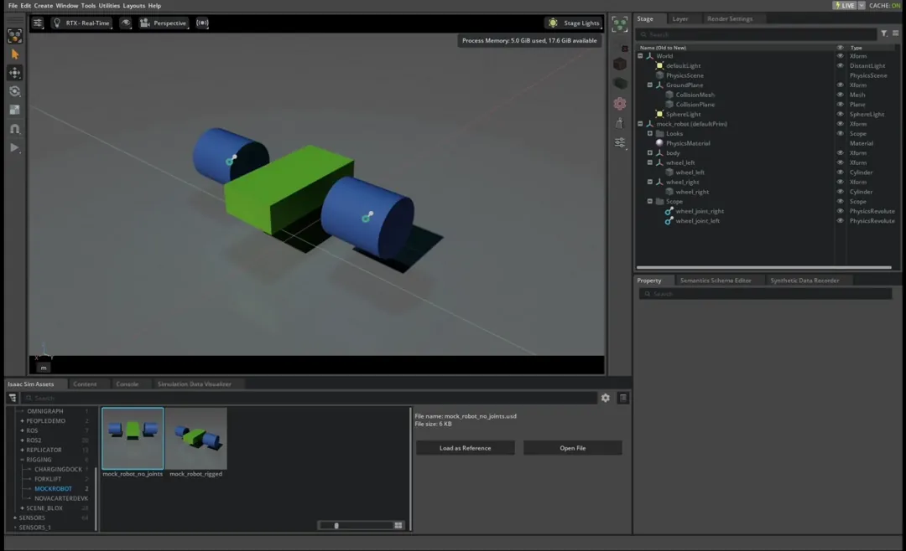
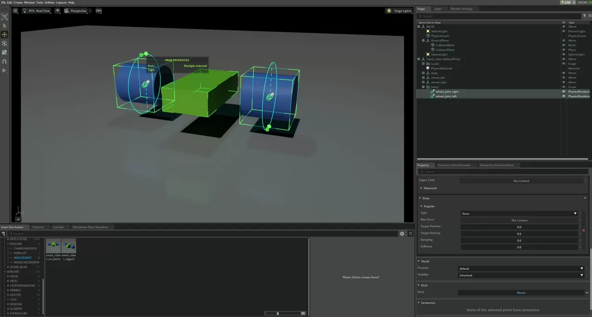
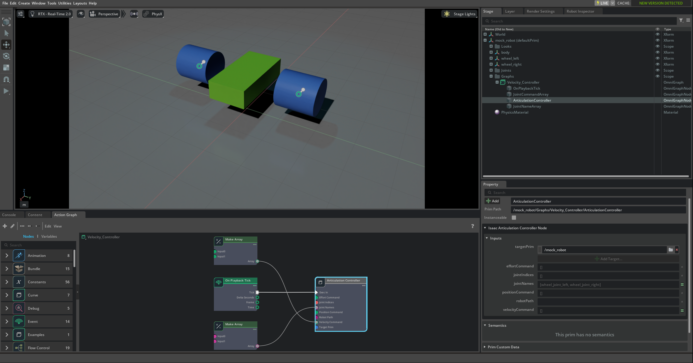

Tutorial 3: Articulate a Basic Robot#
NVIDIA Isaac Sim의 GUI 인터페이스 기능은 세계 구축에 특화된 애플리케이션인 NVIDIA Omniverse™ USD Composer에서 사용되는 것과 동일합니다. 이 튜토리얼은 로봇 사용에 가장 관련성이 높은 GUI 기능에 초점을 맞춥니다. 더 정교한 일반 세계 생성을 위해서는 Omniverse Composer를 참고하세요.
조인트와 아티큘레이션의 개념을 소개하기 위해 세 개의 링크와 두 개의 회전 조인트가 있는 기본 '로봇'을 리깅합니다. Tutorial 2: Assemble a Simple Robot에서 스테이지에 추가된 객체를 직사각형 바디와 두 개의 원통형 바퀴가 있는 모의 모바일 로봇으로 변환합니다.
Onshape 문서 가져오기 또는 URDF Importer Extension에서 가져온 로봇에는 필요하지 않지만, 이 개념들은 로봇을 튜닝하고 아티큘레이션으로 객체를 조립하기 위해 이해해야 하는 중요한 내용입니다.
Learning Objectives#
이 튜토리얼은 두 바퀴 모바일 로봇을 리깅하는 방법을 자세히 설명하며 다음 내용을 다룹니다:
스테이지 트리 계층 구조 구성
두 강체 사이에 조인트 추가
조인트 드라이브 및 조인트 속성 추가
아티큘레이션 추가
Articulation Velocity Controller로 로봇 이동
Prerequisites#
또는 Content Browser의
Isaac Sim/Samples/Rigging/MockRobot/mock_robot_no_joints에 제공된 체크포인트 에셋을 로드합니다. 파일에 영구적인 수정을 해야 하므로 참조로 로드하지 마세요.
Add Joints#
GUI 튜토리얼에서 계속 진행하고 자신만의
mock_robot.usd가 저장되어 있다면 File > Open을 사용하여 엽니다. 그렇지 않으면 Content Browser의Isaac Sim/Samples/Rigging/MockRobot/mock_robot_no_joints에 제공된 에셋을 로드합니다. 파일에 영구적인 수정을 해야 하므로 참조로 로드하지 마세요.구성을 위해 마우스 오른쪽 버튼을 클릭하고 Create > Scope로 조인트를 저장할 Scope를 생성하고 Joints로 이름을 바꿉니다.
두 바디 사이에 조인트를 추가하려면 먼저 두 바디를 모두 선택해야 합니다. 컨텍스트 트리 창에서 바디와 바퀴 부모 변환을 클릭하여 시작합니다. 모의 로봇의 경우 큐브 객체
body를 선택한 다음Ctrl을 누른 채 실린더 객체wheel_left를 선택합니다.두 바디가 강조 표시된 상태에서 마우스 오른쪽 버튼을 클릭하고 Create > Physics > Joints > Revolute Joint를 선택합니다.
RevoluteJoint가 스테이지 트리의wheel_left아래에 나타납니다.wheel_joint_left로 이름을 바꿉니다.Property 탭에서 body0이
/mock_robot/body/body(큐브)이고 body1이/mock_robot/wheel_left/wheel_left(실린더)인지 확인합니다.바디와 실린더 사이의 변환을 고려하여 조인트의 X 축을 Local Rotation 0을
0.0으로, Local Rotation 1을-90.0으로 설정합니다. 실린더가 바디에 비해 X 축으로 90도 회전되어 있기 때문입니다.조인트의 Axis를 Y로 변경합니다. 로봇에 로컬 회전
0이 없으므로 조인트는 바디와 같은 포즈에 있습니다.구성을 위해 방금 생성한 조인트를 Joints scope로 드래그합니다.
오른쪽 바퀴 조인트로 이전 다섯 단계를 반복합니다.
{kind=link}

조인트가 추가되기 전에 세 강체는 Play를 누르면 따로 바닥으로 떨어졌습니다. 이제 조인트가 연결되어 바디가 연결된 것처럼 함께 떨어집니다. 회전 조인트로 연결된 것처럼 함께 움직이는 것을 보려면 뷰포트에서 로봇의 어떤 부분이든 Shift 키를 누른 채 클릭하고 드래그하여 로봇을 끌어다닐 수 있습니다.
{kind=link}

Add a Joint Drive#
조인트를 추가하면 기계적 연결이 추가됩니다. 조인트를 제어하고 구동하려면 조인트 드라이브 API를 추가해야 합니다. 두 조인트를 모두 선택하고 Property 탭에서 + Add 버튼을 클릭하고 Physics > Angular Drive를 선택하여 두 조인트에 동시에 드라이브를 추가합니다.
위치 제어: 위치 제어 조인트의 경우 높은 강성과 상대적으로 낮거나 0의 감쇠를 설정합니다.
속도 제어: 속도 제어 조인트의 경우 높은 감쇠와 0 강성을 설정합니다.
바퀴 조인트의 경우 속도 제어가 더 적합하므로 두 바퀴의 Damping을 1e4로, Target Velocity를 200 rad/s로 설정합니다. 제한된 범위의 조인트로 작업하는 경우 Property 탭의 Raw USD Properties > Lower (Upper) Limit 아래에서 설정할 수 있습니다. Play를 눌러 모의 모바일 로봇이 출발하는 것을 확인합니다.
{kind=link}

Add Articulation#
조인트를 직접 구동하면 로봇을 이동할 수 있지만 계산상 가장 효율적인 방법은 아닙니다. 아티큘레이션으로 만들면 더 높은 시뮬레이션 정확도, 더 적은 조인트 오류를 달성하고 조인트 바디 간의 더 큰 질량 비율을 처리할 수 있습니다. 배후의 물리 시뮬레이션에 대한 자세한 내용은 Physics Core: Articulation을 참고하세요.
연결된 강체와 조인트의 계열을 아티큘레이션으로 만들려면 아티큘레이션 루트를 설정하여 아티큘레이션 트리를 고정합니다. Physics Core: Articulation에서 아티큘레이션 트리 정의에 관한 지침에 따르면:
고정 기반 아티큘레이션의 경우 Articulation Root 구성 요소를 다음에 추가합니다:
아티큘레이션 기반을 세계에 연결하는 고정 조인트.
USD 계층 구조에서 고정 조인트의 상위 조상. 이를 통해 씬에 추가된 단일 루트 구성 요소에서 여러 아티큘레이션을 생성할 수 있습니다.
각 하위 고정 조인트는 아티큘레이션 기반 링크를 정의합니다.
부동 기반 아티큘레이션의 경우 Articulation Root 구성 요소를 다음에 추가합니다:
루트 강체 링크
USD 계층 구조에서 루트 링크의 상위 조상
이 튜토리얼에서는 로봇에 아티큘레이션 루트를 추가합니다:
트리에서
mock_robot을 선택합니다.Property 탭에서 + Add를 엽니다.
Physics > Articulation Root를 추가합니다.
결과 로봇이 Content Browser의 Isaac Sim/Samples/Rigging/MockRobot/mock_robot_rigged에 제공된 에셋과 일치하는지 확인합니다.
Add Controller#
조인트가 아티큘레이션의 일부가 된 후 도구를 사용하여 로봇의 움직임을 테스트할 수 있습니다.
마우스 오른쪽 버튼을 클릭하고 Create > Scope로 또 다른 scope를 생성하고 Graphs로 이름을 바꿉니다. 이것은 ActionGraph를 저장하는 데 사용됩니다.
스테이지 트리에서 Graphs scope를
mock_robotXform 아래로 드래그합니다.Tools > Robotics > OmniGraph Controllers > Joint Velocity로 이동하여 스테이지에 속도 컨트롤러 그래프를 추가합니다. 이 그래프를 통해 각 조인트의 목표 속도를 설정하여 로봇의 움직임을 제어할 수 있습니다.
"Robot Prim"의 Add 버튼을 클릭하고 Articulation Root API가 있는 prim을 선택합니다. 이 경우
/mock_robot입니다.Graph Path에
mock_robot/Graphs/Velocity_Controller를 입력하여 ActionGraph를 위의 Graphs scope에 배치합니다.그래프를 생성하려면 OK를 클릭합니다.
로봇을 이동하려면 Play를 눌러 시뮬레이션을 시작합니다. 기본 위치나 속도 목표가 설정되어 있으면 로봇은 즉시 해당 목표로 이동하기 시작합니다. 조인트 명령을 변경하려면 스테이지 트리에서 /Graphs/velocity_controller 아래의
JointCommandArray를 선택하고 속성 창에서 매개변수input0과input1을 변경합니다.
Note
아티큘레이션 컨트롤러는 라디안을 사용하지만, 스테이지 트리에서 개별 조인트를 선택할 때 찾을 수 있는 Drive API 아래의 기본 USD 속성은 도 단위입니다.
이 특정 로봇은 Differential Controller를 사용하여 제어할 수도 있습니다. OmniGraph Controller 단축키에 대한 자세한 내용은 자주 사용하는 OmniGraph 단축키를 참고하세요.
Note
Differential Controller는 왼쪽 바퀴, 오른쪽 바퀴 순서로 바퀴 속도를 출력합니다. Articulation Controller 조인트 이름 또는 인덱스 배열에서 wheel_joint_right 앞에 wheel_joint_left를 배치합니다.
{kind=link}

Summary#
이 튜토리얼에서는 조인트를 사용하여 강체를 연결하고, 조인트를 제어하기 위한 조인트 드라이브를 추가하고, 조인트 체인을 아티큘레이션으로 전환하고, Articulation Velocity Controller를 사용하여 로봇을 제어하는 방법을 배웠습니다.
이 튜토리얼이 끝나면 Samples/Rigging/MockRobot 폴더에 있는 mock_robot_rigged 에셋과 유사한 바디와 두 개의 바퀴가 있는 로봇을 갖게 됩니다.
Next Steps#
카메라를 자동차에 추가하는 방법을 배우려면 Tutorial 4: Add Camera and Sensors to a Robot으로 계속 진행합니다.
Further Reading#
조인트와 아티큘레이션에 대한 자세한 내용은 Physics Core를 참고하세요.